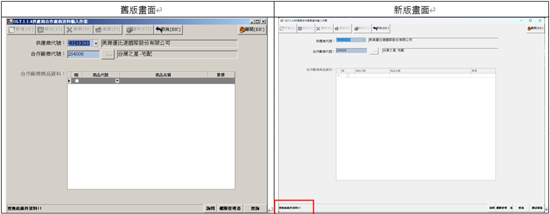
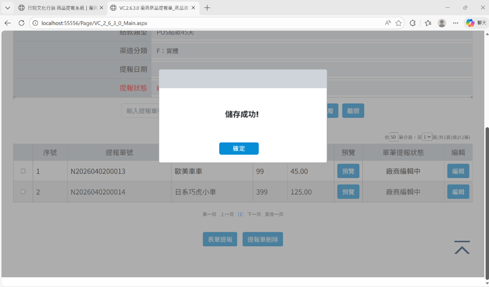
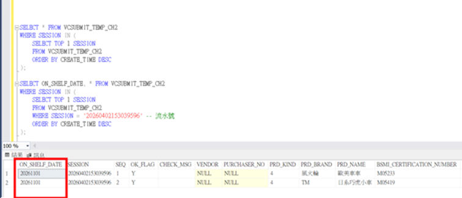
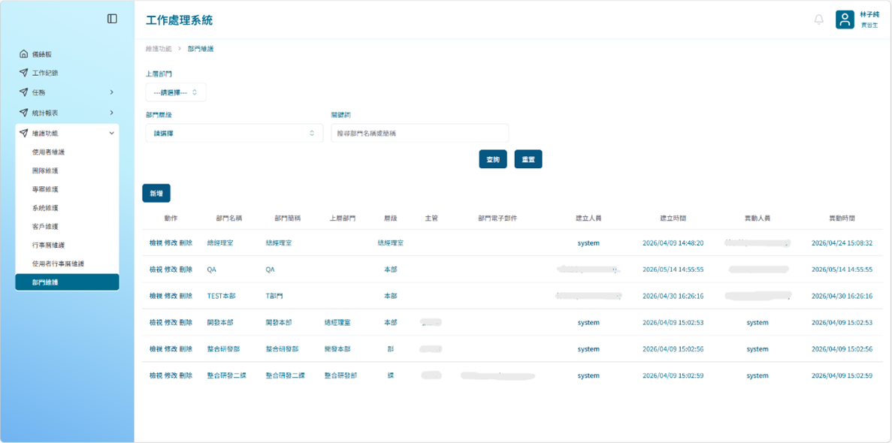
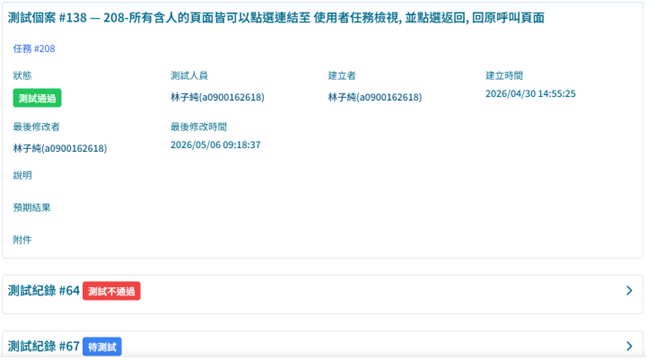

林子純
1
實習期間完成之進度
① 熟悉公司架構（DA、DB、DAL）實做練習
根據公司提供的文件自學新的語法與架構，涵蓋 React、JavaScript、Oracle 等技術，奠定後續開發工作的基礎。
② WinForm 升級
主要任務是在升級版本時，將因版本差異導致跑版的畫面調整為與舊版完全一致。這是一個重複性較高的任務，過程中培養了對畫面細節的敏銳度與耐心。

畫面調整
③ 日翊廠商商品清單批次匯入頁 — 資料庫欄位新增
任務僅需新增一個資料庫欄位，但這是實習以來第一次接觸需要閱讀規格書的需求。在實際修改時發現 DA 架構中新增欄位必須在 XML 裡同步更新多處，讓我深刻體會到全面理解架構的重要性。

畫面

▲ 確認新增一個欄位後仍能正確讀取檔案並儲存到資料庫
④ WKPS 系統維護開發
負責開發「部門維護功能」：首次接觸以 React 開發的第二代架構，也是第一次嘗試用 AI 代理進行開發。核心在於連結部門樹狀圖以顯示層級關係，過程中學會如何清晰地向 AI 表達需求。

▲ WKPS 部門維護功能畫面
協助測試個案：測試工作需從不同使用者角度出發，構想各種情境進行驗證，才能完成一份完整的測試。

▲ 測試個案紀錄
⑤ WKPS 使用手冊開發
採用 AI 全程開發。有了前期 WKPS 維護開發的經驗，能夠制訂可讓 AI 讀取跟遵循的操作規則，也意識到需持續提升對 AI 的掌控能力。

▲ 給 AI 的操作規範

▲ WKPS 使用手冊網頁
2
學習
- 問題分析與解決能力：逐漸掌握閱讀錯誤訊息、設置中斷點等技巧，建立清晰的問題分析流程。
- Git 版本控制：首次接觸 Git，透過 AI 輔助自學，從 KM 知識庫、WKPS 到使用手冊均採用 Git 多人協作管理版本。
- 提問與溝通能力：學會先釐清問題再提問，培養清楚有條理表達想法的能力。
- 運用 AI 加速開發：學會先分析問題、縮小範圍再提問，並在 AI 回應偏離主軸時及時修正方向。
- 功能測試與驗證：設想各種使用者操作情境，針對不同條件進行驗證，確保系統正確運作。
3
過程中扮演的角色
學習者 面對陌生技術架構，持續透過自學、閱讀文件及觀摩學長建立知識基礎。
執行者 獨立負責任務的修改與開發，從理解需求、AI 協作實作到問題排查全程主導。
溝通橋接者 在開發與測試過程中與 SA 確認需求細節，確保開發方向正確且符合預期。
AI 協作者 嘗試用 AI 代理進行開發，學習主導 AI 的輸出方向，在人機協作中找到平衡。
4
自我評估與心得感想
自我評估
整體而言，從一個對業界開發流程幾乎陌生的學生，逐步成長為能夠獨立承接任務、完成交付的開發者。在技術方面，從讀不懂規格書到能自行下中斷點除錯；在軟實力方面，溝通與提問能力有明顯的成長。
心得感想
最大的收穫是對「學習」本身有了新的認識。在 AI 輔助開發的過程中，深刻體悟到：AI 是強大的工具，但無法取代對問題本質的理解。需要先想清楚自己要什麼，才能有效地引導 AI 給出有用的答案。